Symbols
Filters, blends and color effects
Symbol instances can be recolored, blended with what is behind them, and given filters, all without touching the symbol itself. Every one of these settings can change from keyframe to keyframe, and most of them tween.

All three live on the Object tab of the Properties panel when one instance is selected: Color Effect, then Display (with Blending), then Filters. Each change is one step to undo.
What can take effects
| Object | Color effect | Blend mode | Filters |
|---|---|---|---|
| Movie clip instance | Yes | Yes | Yes |
| Button instance | Yes | Yes | Yes |
| Graphic instance | Yes | Yes | Only once it has some, as one in an opened FLA file may. Then the whole Filters section shows, Add Filter included. |
| Text, shapes, drawing objects, bitmaps | No | No | No |
To give text, a shape or a bitmap an effect, make it a symbol first: select it, press F8 and choose Movie Clip (see Create a symbol). To give a graphic instance its first filter, change its Type on the Object tab to Movie Clip. That changes only this instance, not the symbol.
Effects are set on one instance at a time. With several objects selected, the Object tab shows them as a mixed selection, without these sections. To give many instances the same filters, use Copy Filters and Paste Filters or a preset.
Color effects
A color effect changes the colors of everything in the instance: to fade it, darken it for a shadow pass, flash it white on a hit, or tint it to match a scene.
- Select an instance on the stage.
- On the Object tab, under Color Effect, choose a Style.
- Set its values. Drag a value left or right, or click it and type.
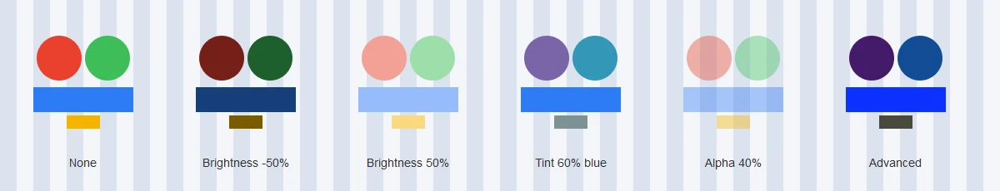
- None
- The symbol's own colors.
- Brightness
- From -100% (black) through 0 (unchanged) to 100% (white). The shape's alpha stays as it is, so a fully dark or bright instance is a solid silhouette.
- Tint
- Mixes every color toward one color. The swatch picks the tint color, or set its Red, Green and Blue values (0 to 255). The percentage beside the swatch says how far: 0% leaves the colors alone, 100% paints the whole instance in the tint color. A new tint starts at 50%.
- Alpha
- Transparency, from 0% (invisible) to 100% (solid).
- Advanced
- A multiplier and an offset for each of alpha, red, green and blue. This can make any of the changes above, and ones they can't, such as dropping out one channel or pushing the colors toward night blue.
How each style works
Every style is a sum done on each pixel's red, green, blue and alpha values, which run from 0 to 255. The result is kept within 0 to 255.
| Style | New value of each color channel |
|---|---|
| Brightness b above 0 | old × (1 − b) + 255 × b |
| Brightness b below 0 | old × (1 + b) |
| Tint, amount t | old × (1 − t) + tint color × t |
| Alpha a | Colors unchanged; alpha × a |
| Advanced | old × multiplier + offset, for each channel and for alpha |
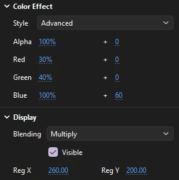
In the Advanced style, the left column is the multiplier, from -100% to 100%, and the right column (after +) is the offset, from -255 to 255.
Worked example. With the settings shown, an orange pixel of red 255, green 140, blue 0 becomes:
- red 255 × 30% + 0 = 76
- green 140 × 40% + 0 = 56
- blue 0 × 100% + 60 = 60
So orange turns a dark violet, and the whole instance looks lit by moonlight. Alpha at 100% + 0 leaves its transparency alone.
Two more recipes: red, green and blue at -100% with offsets of 255 make a photo negative; all three at 0% with offsets of 255 make a white silhouette, like Brightness 100%.
Brightness, Tint and Alpha replace each other: switching from one to another starts the new one fresh, rather than adding to the old. Choosing None clears the effect.
The camera can color the whole picture it sees, with the same styles, for fades to black or white. See Multiplane camera.
Blend modes
A blend mode says how an instance's colors mix with what is beneath it on the stage: the layers below, and the objects behind it on its own layer.
- Select an instance.
- On the Object tab, under Display, choose a mode from Blending.
In the table, the instance is the color of the object you set the mode on, and the backdrop is the color beneath it.
| Mode | Result | Good for |
|---|---|---|
| Normal | The instance covers the backdrop, as far as its alpha allows | Everything else |
| Layer | Looks like Normal, but the instance is drawn on its own first, so Alpha and Erase instances inside it can cut into it. See Layer, Alpha and Erase | Holes and cutouts |
| Multiply | Instance × backdrop. Always darker; white leaves the backdrop alone, black makes black | Shadows, ink, stains, colored glass |
| Screen | The inverse of multiplying the inverses. Always lighter; black leaves the backdrop alone, white makes white | Light, glows, fog, reflections |
| Lighten | The lighter of the two, channel by channel | Replacing only the dark parts |
| Darken | The darker of the two, channel by channel | Replacing only the light parts |
| Overlay | Multiplies where the backdrop is dark and screens where it is light, so the backdrop's lights and darks stay | Coloring a scene while keeping its shading |
| Hard Light | Multiplies where the instance is dark and screens where it is light: Overlay with the two swapped | Harsh light, strong shading |
| Add | Instance + backdrop, stopping at white | Bright light, sparks, flashes |
| Subtract | Backdrop − instance, stopping at black | Darkening, burn effects |
| Difference | The darker of the two subtracted from the lighter, channel by channel | Psychedelic and glitch looks |
| Invert | Inverts the backdrop wherever the instance covers it; the instance's own colors don't matter | Negative flashes, X-ray looks |
| Alpha, Erase | Cut into what is beneath them inside a Layer instance | See below |
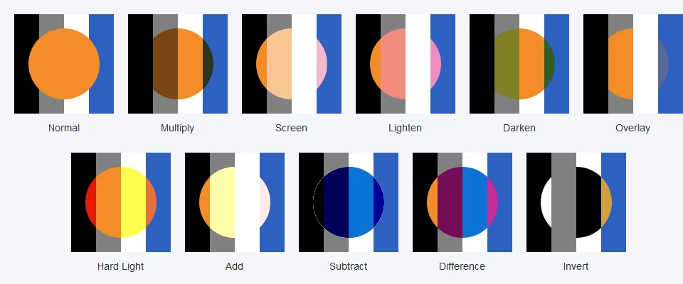
A worked example
Take the orange circle above (red 242, green 140, blue 40) over the gray stripe (128 in every channel). Channel by channel:
- Multiply: red 242 × 128 / 255 = 121, green 70, blue 20. A dark brown-orange: the circle looks painted on the gray in transparent ink.
- Screen: red 255 − (13 × 127 / 255) = 248, green 198, blue 148. A pale peach: the circle looks projected onto the gray as light.
- Add: red 242 + 128 = 370, stopped at 255; green 268, stopped at 255; blue 168. A pale yellow, brighter than Screen.
- Subtract: red 128 − 242, stopped at 0; green 0; blue 128 − 40 = 88. Navy: where the instance is brighter than the backdrop, the channel goes black.
On the white stripe, Multiply shows plain orange and Screen shows plain white; on the black stripe it is the other way round. That is the quickest way to tell which mode you want: Multiply for things that should only darken, Screen or Add for things that should only lighten.
To add a soft shadow with Multiply
- Draw the shadow shape in a mid gray or a dark color of the scene, and convert it to a movie clip (F8).
- Place it over the ground, under the character.
- Set Blending to Multiply. The ground's color and texture show through, darkened.
- For a softer edge, add a Blur filter to the same instance.
Layer, Alpha and Erase
Alpha and Erase only do something on an instance that is inside another instance set to Layer. They cut into what is beneath them in that Layer instance:
- Erase
- Removes what is beneath it in the Layer instance wherever it is opaque, so the scene behind shows through. Its colors don't matter, only its shape and alpha.
- Alpha
- Keeps what is beneath it in the Layer instance only where it is opaque, and removes the rest, like a mask.
Partly transparent pixels cut partly. Anything stacked above the Alpha or Erase instance in the same symbol is not cut. Outside a Layer instance, an Alpha or Erase instance draws nothing at all.
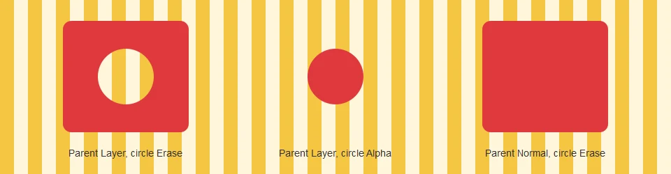
To cut a hole through a movie clip:
- Open the movie clip for editing (double-click it).
- On a layer above the art, draw the hole's shape in any color, convert it to a movie clip (F8), and set its Blending to Erase. It disappears, which is expected.
- Go back to the scene, select the outer movie clip, and set its Blending to Layer. The hole appears, and whatever is behind the clip shows through it.
Animate the Erase instance inside the clip to make the hole move, grow or wipe across.
Filters
Filters add shadows, blurs, glows, bevels and color adjustments to a movie clip or button. They are drawn from the instance's picture each time it is shown, so they follow its outline as it animates and never change the symbol itself.
To add a drop shadow
- Select a movie clip or button instance.
- On the Object tab, under Filters, click Add Filter and choose Drop Shadow. The shadow appears at once, with its usual starting settings: black, 5 px of blur, 100% strength, 45° and 5 px away.
- Change its settings in the rows under the filter's name. Raise Blur X and Blur Y for a softer shadow, Distance to lift the object off the ground, and lower Strength to make the shadow lighter.
- Click the Color swatch to pick the shadow's color and opacity.

Each filter in the list has a heading row:
- The checkbox with its name turns it on or off. A filter that is off keeps its settings, and is saved with the file.
- ▲ and ▼ move it up or down the list. See Stacking order.
- × removes it.
Under the list are Copy Filters, Paste Filters, Presets and Add Filter.
Settings most filters share
Every filter except Adjust Color blurs something, and most also have a strength. The settings are:
- Blur X, Blur Y
- How far the blur spreads, sideways and up and down, from 0 to 255 px. Set them differently for a stretched blur, such as a streak of speed.
- Quality
- Low, Medium or High: the blur is done once, twice or three times. Higher quality is smoother and reaches further for the same Blur values, and takes longer to draw. Low is often enough for small blurs; High looks best on large, soft ones.
- Strength
- How solid the effect is, from 0% to 1000%. 100% is plain. Above it, the soft edge of a shadow or glow fills in and turns denser; at 0% the effect disappears.
- Angle
- The direction a shadow or bevel falls, in degrees, from -360 to 360. 0° is to the right and the angle turns clockwise, so 45° is down and to the right and 90° is straight down.
- Distance
- How far a shadow or bevel is offset, from -255 to 255 px. A negative distance throws it the opposite way.
- Knockout
- Hides the object itself and keeps only the effect. A knocked-out shadow or glow also has the object's shape cut out of it, so the background shows through where the object was.
- Colors
- Click a swatch to choose a color. The color picker includes opacity, so a shadow can be a half-transparent color without lowering its strength.
Filter sizes are in pixels of the space the instance sits in. Scaling the instance itself doesn't make its blur or shadow bigger, though scaling a symbol it is inside does, and so does zooming the stage. A shadow's angle is measured on the stage, so it keeps falling the same way however you rotate the instance.
Drop Shadow
A copy of the object's shape in one color, offset and blurred, behind the object. Settings: Blur X and Y, Quality, Strength, Angle, Distance, Color, and three options:
- Knockout
- Shows only the shadow, with the object's shape cut out of it.
- Inner shadow
- Puts the shadow inside the object's edge instead, as if the object were a hole cut into the page. At 45° it lines the top and left edges, as if light came from the top left.
- Hide object
- Shows the shadow alone, without the object and without a hole. Use it for a shadow you want to skew or place apart from the object: put a second instance of the same symbol where the shadow should be, give it a drop shadow with Hide object, and transform it as you like.
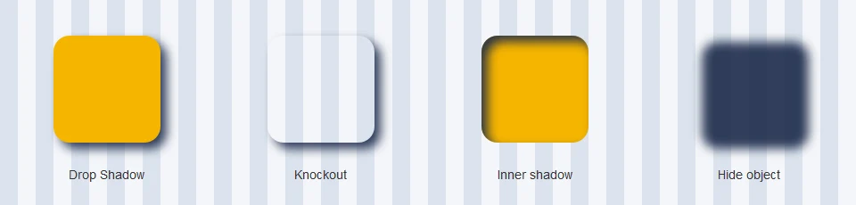
Blur
Softens the whole instance. Settings: Blur X, Blur Y and Quality. Blur X alone, with Blur Y at 0, smears the object sideways like a fast pan; both together make it look out of focus. Animate the blur to pull focus, or to bring something in out of a haze.
Glow
A blurred halo of one color around the object's edge, with no offset. Settings: Blur X and Y, Quality, Strength, Color (it starts red), Knockout, and Inner glow, which puts the glow inside the edge instead. A strength of 200% to 400% with a small blur makes a crisp outline.
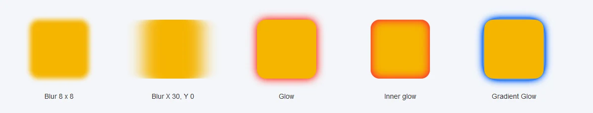
Bevel
Makes the object look raised, with a highlight on the edges facing the light and a shadow on the edges facing away. The angle is the way the shadow falls, so at 45° the light comes from the top left. Settings: Blur X and Y (how wide and soft the beveled edge is), Quality, Strength, Angle, Distance (how deep it looks), the Shadow and Highlight colors, Knockout, and Type:
- Inner
- The bevel lies inside the object's edge, like a raised button.
- Outer
- The bevel lies outside the edge, so the object looks set into a raised surface.
- Full
- Both, inside and outside the edge.
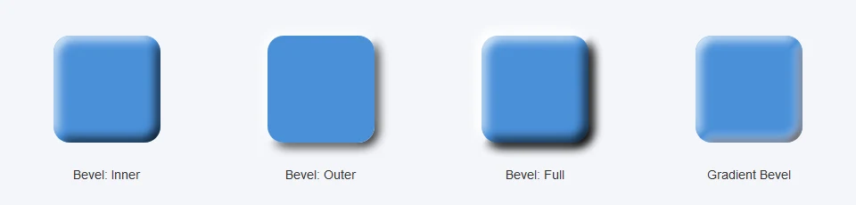
Gradient Glow
A glow colored by a gradient instead of one color. Settings: Blur X and Y, Quality, Strength, Angle and Distance (so the glow can be offset like a shadow), Type, the gradient bar, and Knockout. The left end of the bar is the outer edge of the glow and the right end is next to the object; a new Gradient Glow runs from clear white out at the edge to black at the object. The Type list is shown, but today the glow is always drawn outside the object whatever it says.
Gradient Bevel
A bevel colored by a gradient. It has the Bevel's settings, with a gradient bar in place of the two colors. The middle of the bar is the flat face of the object, the right end colors the edges facing the light, and the left end colors the edges on the shadow side. Keep the middle stop clear so only the edges are colored. A new Gradient Bevel starts with just two stops, clear white and black, which darkens the whole face; click the middle of the bar to add a stop there and make it transparent.
Editing the gradient bar
The two gradient filters edit their colors on the same bar as the Color panel:
- Click the bar to add a color stop. It takes the color the gradient already has there. A gradient holds up to 15 stops.
- Drag a stop's pointer along the bar to move it.
- Drag a pointer down, well off the bar, and let go to remove it. At least two stops always stay.
- Double-click a pointer to choose its color. The picker includes opacity, which is how you make a stop clear.
Adjust Color
Changes the instance's colors with four sliders, without a blur. It is the one filter with no Quality, Strength or Knockout.
- Brightness
- -100 to 100. Adds or takes away the same amount from every channel, lifting or lowering darks and lights alike.
- Contrast
- -100 to 100. Spreads the colors away from mid gray, or pulls them toward it. At -100 everything is mid gray.
- Saturation
- -100 to 100. At -100 the instance is grayscale; above 0 the colors grow more intense.
- Hue
- -180 to 180 degrees. Turns every color around the color wheel: at 120, reds turn blue, greens turn a reddish brown and blues turn green; at -120 they turn the other way.
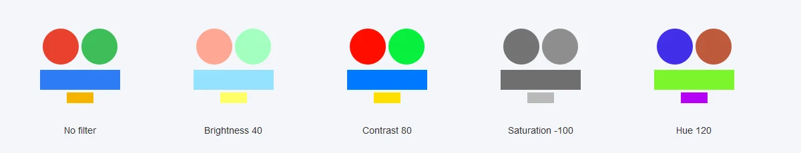
Adjust Color and the color effect can be used together. The color effect is applied first, then the filters in order. Adjust Color can do what the color effect can't, such as grayscale or a hue shift; the color effect can fade the instance, which Adjust Color can't.
Stacking order
An instance can have as many filters as you like, of any kinds, even several of the same kind. They are applied from the top of the list down: the second filter works on the picture the first one made, and so on. Order matters wherever one filter would catch another's result:
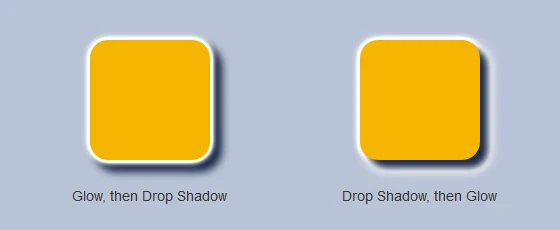
Use ▲ and ▼ on a filter's heading to move it. A common stack for a game sprite or a title is a Glow for an outline, then a Drop Shadow, then a Bevel last so it shades the outline too.
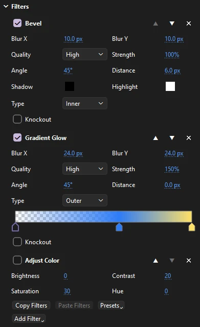
Turning filters off. Clear a filter's checkbox to turn it off while you look at the others, or to keep a version of the look ready without showing it. Here the Adjust Color filter is off. It keeps its settings, its place in the list, and is saved with the file.
Removing a filter. Click × on its heading. There is no command to remove them all at once; click × on each one.
Copy and paste filters
- Select the instance whose filters you want and click Copy Filters. All its filters are copied, the ones turned off included.
- Select another movie clip or button and click Paste Filters. Its own filters are replaced by the copied ones.
The copied filters stay ready to paste onto more instances, in any open document, until you copy others or quit Phoenix. Copying the instance itself () also brings its filters, color effect and blend mode along with it.
Filter presets
A preset keeps a set of filters under a name, to put on any instance later.
- Save a preset
- Select an instance with the filters you want, click Presets and choose Save As.... Type a name and click OK. All its filters are saved, in order, with their settings. Saving under a name that already exists replaces that preset.
- Apply a preset
- Select an instance, click Presets and choose the preset by name. Its filters replace the instance's own. Undo puts the old ones back.
- Delete a preset
- Click Presets, point to Delete, and choose the preset.
Presets are kept in Phoenix's own settings on your computer, not in the document, so every document you open can use them. They don't travel with an FLA file you send to someone else. Presets can't be renamed: apply one, save it under the new name, and delete the old one.
Filters and drawing speed
Each filtered instance is drawn on its own and then filtered, every time it changes. Large blurs, High quality and long stacks take the most time. If the stage feels slow while you animate, set Quality to Low while you work and back to High before you export, or turn the heaviest filters off for a while.
Animating effects
Color effects and filters tween; blend modes do not.
In a classic tween
Set different effects on the instance at each keyframe, and the frames between blend from one to the next:
- Color effects blend every amount, multiplier and offset, and the tint color. A tween from Alpha 0% to Alpha 100% fades in; from Brightness 100% to None flashes white and settles.
- Filters pair up by their place in the list. When the pair are the same kind, their blurs, strength, angle, distance, colors, gradient colors and Adjust Color sliders blend. On-off settings (Knockout, Inner, Hide object, Type) come from the first keyframe.
- A filter that only one of the two keyframes has fades in or out: the other keyframe is taken to have the same filter with no blur, distance or strength.
- When the two filters at the same place are different kinds, the first keyframe's filter is shown unchanged until the next keyframe. Keep both keyframes' lists in the same order to tween them.
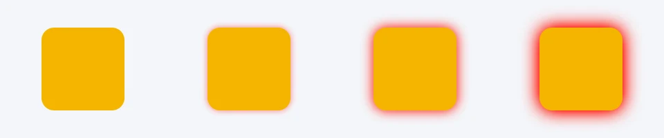
To make a glow pulse:
- Give a movie clip a Glow filter with Blur 0 and Strength 0 on its first keyframe.
- Add a keyframe (F6) a few frames later and raise the glow's Blur and Strength there.
- Add a third keyframe later still, and copy the first keyframe's settings back: Copy Filters on the first, Paste Filters on the third.
- Right-click a frame in each span and choose Classic Tween. See Classic tweens.
In a motion tween
Move the playhead to a frame inside a motion tween and change the color effect or a filter's number there: Phoenix keys that value on that frame, and the tween curves between keys. The numbers that key are the color effect's values; Blur X and Blur Y on every filter that blurs; Strength on every filter but Blur; Angle and Distance on Drop Shadow, Bevel and the two gradient filters; and the four Adjust Color sliders. Edit their curves in the Motion Editor.
Filter colors, Quality, the on-off options and Type are not keyed: changing one inside a motion tween changes it for the whole span. Adding, removing or reordering filters does the same.
Blend modes and keyframes
A blend mode holds from its keyframe until the next one: there is no in-between for Multiply and Screen. To ease from one look to another, put two instances on top of each other with different modes and cross-fade them with color effect alpha.
Effects in exported files
- Movies and images (Export Movie, Export Image) show everything as the stage does.
- SWF movies keep each instance's color effect, filters and blend mode, for the player to draw. See SWF movies.
- HTML5 pages carry color effects, blend modes and all seven filters, drawn by the browser, so filter edges can differ slightly from Phoenix's. See HTML5 pages.
- SVG includes filtered instances as images, and draws blend modes as Normal. See Export to SVG.
Effects from scripts
Scripts can set all of this on the selected instances: setBlendMode, setInstanceAlpha, setInstanceBrightness, setInstanceTint, and for filters addFilter, setFilterProperty, setFilters, getFilters, and enabling, disabling, reordering and removing them. That is handy for putting the same look on hundreds of instances at once. See What scripts can reach.
Beyond filters
An instance can also carry Phoenix's own effects on its picture: outlines, distortions, gradients, color grades and wipes, from the Effects side of the Behaviors panel. See Effects on one instance.
Effect layers
To shade part of a layer with a tone, highlight or glow whose shape you draw, rather than change a whole instance, use an effect layer. See Tone, highlight and glow.